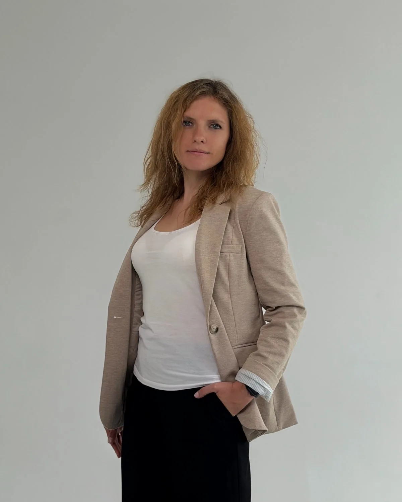
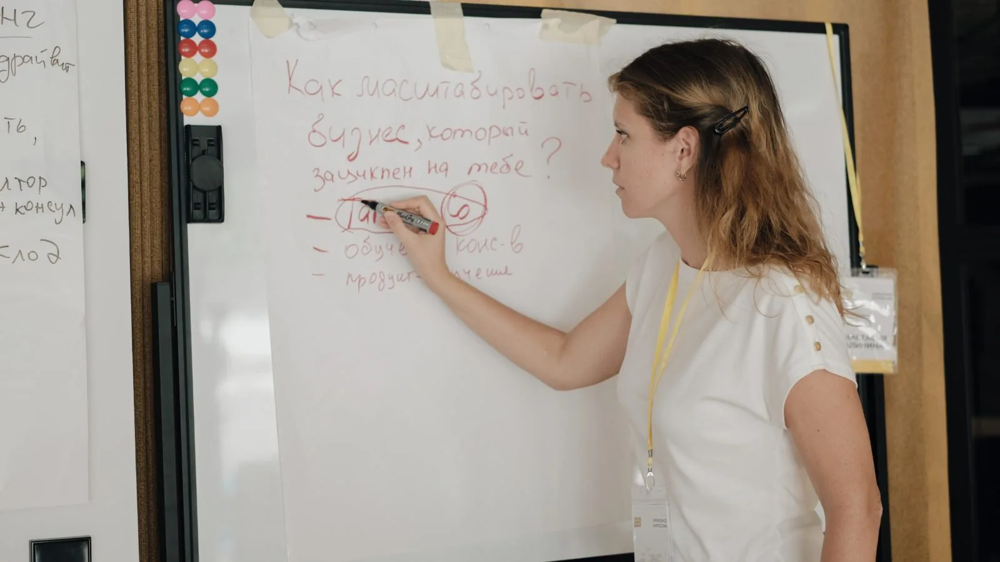

I скорость
Бизнес растёт за счёт собственника
Ручной контроль, личные решения, личные отношения с клиентами. Рост пропорционален нагрузке на владельца.
Международный бизнес-стратег · Предприниматель · Внешний CEO · Спикер
Помогаю собственникам выстраивать продажи, команду и систему управления так, чтобы бизнес мог расти без постоянного личного контроля владельца.

в продажах, бизнесе и управлении
предпринимательского опыта
компаний в проектах
построенных и трансформированных отделов продаж
стран работы и проектов
01 Ситуация
Сначала компания растёт за счёт энергии собственника. Он продаёт, нанимает, контролирует, принимает ключевые решения и знает практически всё, что происходит внутри.
Потом компания становится больше: сотрудники, руководители, CRM, отчёты, планёрки, новые направления. Но вопросов, которые возвращаются к собственнику, меньше не становится.
Бизнес просто вырос быстрее, чем его система управления.
Дело уже не в том, что собственнику нужно работать эффективнее. Именно с такими компаниями я работаю.
02 Концепция
I скорость
Ручной контроль, личные решения, личные отношения с клиентами. Рост пропорционален нагрузке на владельца.
II скорость
Компания масштабируется без пропорционального роста хаоса и нагрузки на владельца.
Что появляется в компании вместо ручного контроля
Собственник перестаёт управлять каждой задачей и каждым человеком.
Он начинает управлять системой.
03 Подход
Запрос на поверхности и реальная причина проблемы — далеко не всегда одно и то же. Нажмите на запрос, чтобы увидеть, что часто оказывается на самом деле.
Нужен сильный РОП
Ищут нового руководителя, хотя у должности даже не определён результат.
Продажи перестали расти
Увеличивают маркетинговый бюджет, хотя уже теряют полученные лиды внутри отдела продаж.
Менеджеры плохо продают
Обучают менеджеров, но не меняют систему контроля.
Хотим внедрить CRM
Нанимают новых людей, хотя существующие процессы забирают половину рабочего времени команды.
Не могу выйти из операционки
Пытаются делегировать, но оставляют все реальные решения за собственником.
Поэтому я не начинаю работу с готового решения. Сначала разбираюсь, как на самом деле работает бизнес и где находится главное ограничение его роста. Компания — это единая система:
Если один контур не работает, бизнес начинает компенсировать его людьми, деньгами или временем собственника. Моя задача — найти этот разрыв и перестроить систему.
04 Форматы работы
Для компаний, где понятно, что бизнес способен работать сильнее, но непонятно, где главное ограничение. Погружаюсь в бизнес, говорю с собственником и командой, анализирую продажи, цифры, структуру, роли и процессы.
Результат — ответы на 4 вопроса
Для предпринимателя, которому нужен сильный второй взгляд и партнёр для ключевых решений. Работаем с цифрами, командой, руководителями, оргструктурой, продажами, приоритетами и ролью самого собственника.
Недостаточно сказать «Вам нужно делегировать». Нужно определить:
что именно передать, кому, с какой ответственностью, по каким правилам — и как понять, что система действительно работает.
Когда рекомендаций уже недостаточно и изменения нужно внедрять вместе с командой. Продажи, оргструктура, руководители, найм, мотивация, CRM, аналитика, контроль качества, обучение, регулярное управление.
Главный принцип
Я не создаю систему, которая начинает зависеть от меня.
Изменения встраиваются так, чтобы команда управляла ими самостоятельно.
05 Продажи
49построенных и трансформированных отделов продаж в B2B и B2C
Проблема почти всегда шире, чем «менеджеры плохо продают». Результат зависит от того:
Я строю не скрипты. Я строю управляемую систему продаж.
06 Результаты
Интернет-провайдер
к ежемесячной выручке за 2,5 месяца
Около +9,7 млн ₽ ежемесячно. Не через «волшебный инструмент», а через перестройку коммерческой системы: B2B и B2C продажи, план-факт, показатели, роль РОПа и регулярное управление.
Производственная компания · Узбекистан
×3к прибыли за 3 месяца
Без увеличения бюджета
Рост произошёл не за счёт дополнительных вложений, а за счёт изменения самой системы работы бизнеса.
Ювелирная сеть · 5 городов · 40+ человек
6 мес.из убыточности в стабильную прибыль
В роли директора по развитию — с ответственностью за результат изнутри
Коммерческий результат, продажи, маркетинг, команда, мотивация, обучение и показатели. Я знаю бизнес не только со стороны консультанта.
07 Обо мне
С них начался профессиональный путь.
С нуля до двух офисов и более 5 000 клиентов. Параллельно — страховой бизнес.
Пять городов, коммерческий блок и команда более 40 человек.
Десятки компаний, управленческих моделей, ошибок и сценариев роста.
Сегодня — напрямую с собственниками компаний в разных странах.
Мне важно ответить не только «что изменить», но и кто конкретно, что конкретно и когда начнёт делать иначе. Если решение невозможно внедрить в реальной компании — это не решение.
08 Спикерство
Участники анализируют собственные компании, считают, принимают решения, задают сложные вопросы и разбирают реальные кейсы.

Как перевести компанию, которая переросла ручное управление, на системное.
Что должно появиться внутри бизнеса, чтобы проблемы перестали возвращаться владельцу.
Как превратить большую цель в приоритеты, цифры и план действий на 90 дней.
Почему ошибка при найме часто происходит ещё до публикации вакансии.
Система продаж, в которой менеджеры не читают скрипты механически.
Диагностика реальной компании прямо в зале: главное ограничение и следующее решение.
Форматы — от практического выступления на 60–90 минут до мастермайндов, Open Space и полноценных стратегических сессий.
09 Мой принцип работы
Я не прихожу в компанию, чтобы подтвердить уже принятое собственником решение. И не считаю, что все проблемы бизнеса — в сотрудниках.
Иногда изменения нужны в отделе продаж. Иногда — в руководителях или оргструктуре. А иногда главный элемент, который должен измениться, — способ управления самого собственника.
Моя задача — не стать незаменимой для компании.
Моя задача — построить систему, которой компания сможет управлять без меня.
10 Контакты
Если компания выросла, а решений, которые приходится держать лично, становится всё больше — возможно, проблема уже не в отдельных сотрудниках. Возможно, бизнесу нужна другая система управления.
Разберём, где главное ограничение вашей компании и что изменить в первую очередь.